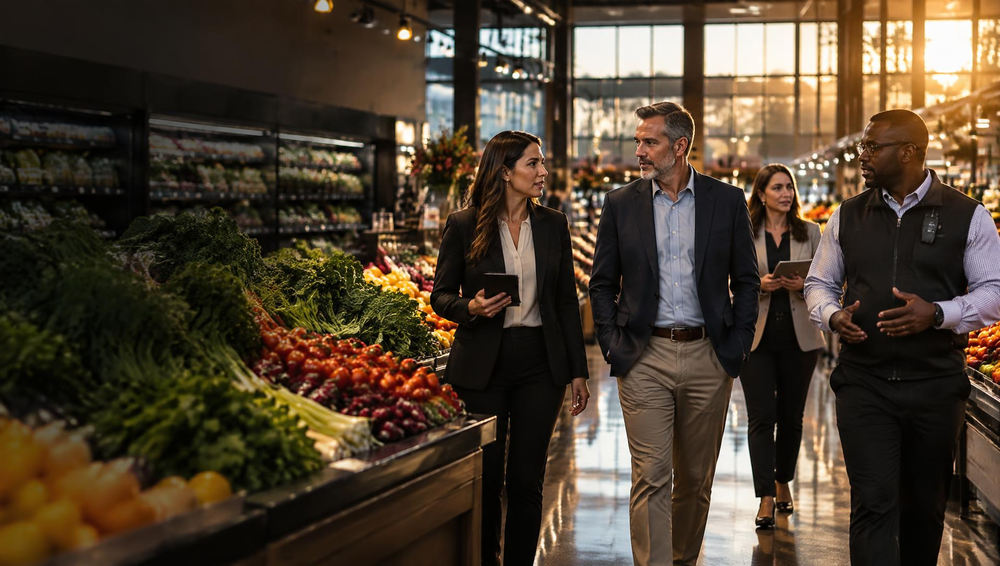
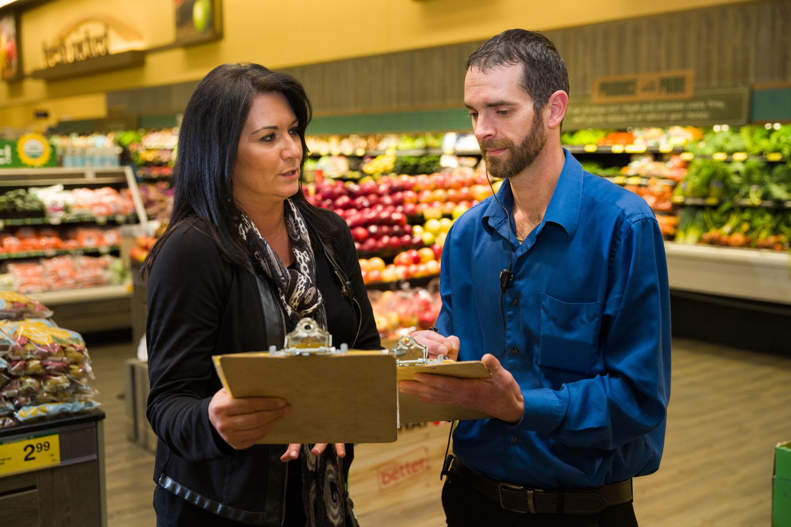

I Lead Grocery
Learn how peers are using AI and benchmark your own plans.
- Operations, asset protection and safety
- Risk, cybersecurity and privacy
- Food safety and store performance
- Peer perspectives

How AI can improve grocery performance across operations, asset protection, safety, risk management, cybersecurity, privacy and food safety. Come to learn, collaborate and compare notes with your peers.
Grocers in the Room in 2026
AI is no longer a single-department tool. Grocers are exploring it wherever data, decisions and risk meet. Here is where the conversation is happening.
Forecast demand, balance labor to traffic, and spot slow lanes, empty shelves and process gaps sooner.
Find shrink patterns, flag checkout exceptions and focus investigators on the cases that matter.
Detect slips, blocked exits and unsafe conditions early, and support employee and shopper wellbeing.
Connect claims, incident and compliance data to see risk earlier and plan for any crisis.
Use AI to detect threats faster, and secure the AI tools and data your stores now depend on.
Put governance, transparency and shopper trust at the center of every AI decision.
Monitor temperatures, sanitation and traceability data to catch problems before they reach the shopper.
Peer-led. Practical. Put to work immediately. Hear Vy on why AP leaders, solution providers and AI-curious teams should be at FMI APGR 2027.
Whichever discipline you lead, the goals are shared.
Take repetitive review and reporting off busy teams so they can spend time on shoppers and on solving problems.
Spot shrink, fraud, spoilage and waste patterns earlier, across more stores than a person can watch.
Surface hazards and escalating situations sooner to protect employees, shoppers and food.
Turn scattered incident, cyber and compliance information into a clearer picture for leadership.
Connect the dots between availability, labor, loss and the shopper experience.
Ask the hard questions on privacy, security, bias and oversight, together with peers who are asking them too.
Learn, collaborate and register your interest in food retail’s resilience community.
Practical examples, research and best practices on AI across the store.
Peer conversations and trading partner discussions on shared challenges and priorities.
Tell us your role and topics so the community can plan around what matters to you.

Learn how peers are using AI and benchmark your own plans.
An open space for discussion, learning and collaboration with grocers.
APGR brings food retail leaders together to strengthen every part of the business, from physical and digital security to technology, workforce and operations.
See where AI can improve detection, decisions, efficiency and responsible risk management.
90% of retailers say cybersecurity is a major concern. Digital disruption is operational disruption.
74% of retailers have anti-shoplifter programs. 68% cite self-checkout as a major shrink concern.
62% of shoppers say safety influences where they shop. Better prepare for any crisis.
Statistics as published on the FMI APGR conference page.
2027 focus areas
The FMI Asset Protection & Grocery Resilience Conference. April 12–15, 2027 at the Westin Dallas Central Park in Dallas, Texas.
Ready to register? See attendee details on FMI.org →
Pick a resource. Tell us where to send it.
The best ideas come from people solving the same problems. The sponsor room is a place to ask questions, share what’s being learned and work through challenges together.
Open conversations about what’s working, what isn’t and what’s next.
Hear grocery priorities first-hand and share lessons from other industries.
Work on shared challenges across operations, safety, risk and security.
Meet the people behind the programs and keep the conversation going all year.
FMI’s reports, guides and peer conversations keep working all year.
One Grocery Community. 365 Days. One Annual Gathering.
This event is also about community — a home for food industry professionals to share best practices and real life stories, and grow together.
We are part of a unique community within the retail industry where the word ‘competitor’ usually does not exist.
This recognition means so much — not because of what I’ve done, but because of the incredible people I’ve learned from and worked alongside at Festival Foods.
Westin Dallas Central Park · Dallas, Texas
Questions? Reach out.